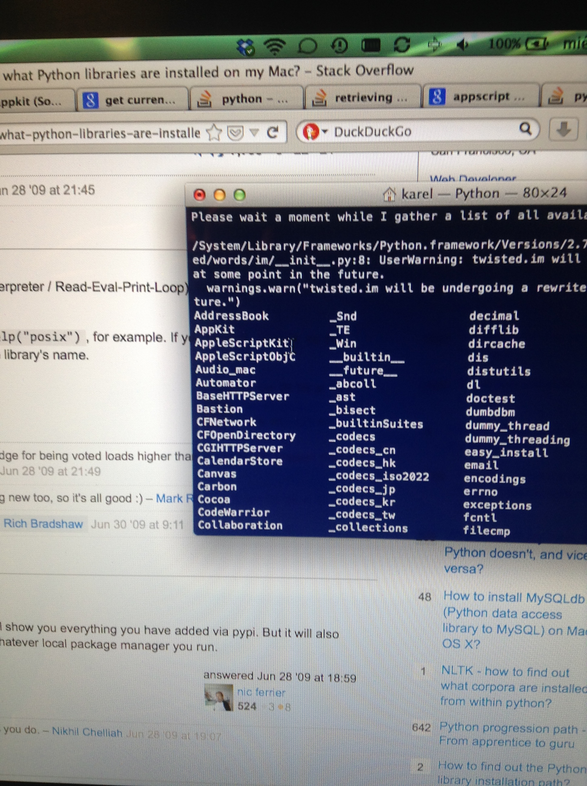

This article is a first post using Pelican, a static site generator using Python. It has extensive and well written documentation, and a nice, easy-to-understand file hierarchy.
This site is published via Github Pages.
Pelican lets you include images via Markdown,

and code snippets with a specific syntax. This is an example for Python,
print "Hello World!"
while this is an example for Matlab:
disp("Hello World!");
Finally, C's "Hello World!"
/* Hello World program */
#include<stdio.h>
main() {
printf("Hello World");
}
It also allows to write in math mode:
$$ \sum_{i=1}^{100} i = 5050 $$